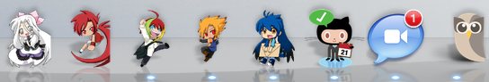

和小莎一起做遊戲
小莎的遊樂園！
http://moztw.org/foxmosa/
Firefox 10開始支援CSS3 Transform 3D
CSS Background
http://lea.verou.me/css3patterns/#tablecloth
background-size: 4px 4px
- 有人的Firefox 10會當掉，9會爆慢
- Opera直接不算就放棄了
- 但Chrome大致上沒問題
- 可能單圖小，平鋪量大，只好拉回50px
FullScreen API
https://developer.mozilla.org/en/
DOM/Using_full-screen_mode
先檢查支援
if (typeof document.cancelFullScreen != 'undefined' ||
typeof document.mozCancelFullScreen
!= 'undefined' ||
typeof document.webkitCancelFullScreen
!= 'undefined') {
uiFullscreen.click(toggleFullscreen);
uiFullscreen.addClass('support');
}
再設定動作
function enterFullscreen(docElm) {
// cancelFullscreen is the same
if (docElm.requestFullscreen) {
docElm.requestFullscreen();
}
else if (docElm.mozRequestFullScreen) {
docElm.mozRequestFullScreen();
}
else if (docElm.webkitRequestFullScreen) {
docElm.webkitRequestFullScreen();
}
}
切換全螢幕
function toggleFullscreen() {
if (
(document.fullScreenElement &&
document.fullScreenElement !== null) ||
(!document.mozFullScreen &&
!document.webkitIsFullScreen)) {
enterFullscreen(document.documentElement);
} else {
cancelFullscreen();
}
}
:full-screen
- MDN有提到 Webkit 有奇怪的背景問題
- 把全螢幕對象綁到 document.documentElement 上
- 然後再把原本放body的背景移過去
- Firefox 9有支援但預設不開啟功能，按鈕沒反應，不修了
:target
- 搭配 pseudo elements 做暗室效果遮罩
- 只有 Firefox 有支援 pseudo elements 漸變，Chrome 無效，規格明明說要支援Orz
- 僅淡入有漸變，淡出則無，是這用法的限制
- 或許其實有不靠JS的淡出方法，只是我太笨
transform: rotate3d(0,1,0,-180deg);
- 即使不同時做scale放大，無硬體加速的效能也…
- Chrome 16轉的方向跟 Firefox 10不一樣
- 看起來 Chrome 16才是對的
- 但 Chrome 15轉的方向卻跟 Firefox 10一樣
PxLoader
http://thinkpixellab.com/pxloader/
QRCode
https://google-developers.appspot.com/
chart/infographics/docs/qr_codes
Offline Cache
<html manifest="./site.appcache">
勞動服務
http://bit.ly/starpusher
不斷的重繪很吃資源
而且每款Canvas遊戲都這樣
requestAnimationFrame
- 讓瀏覽器自己控制重繪，取代setTimeOut的好東西
- 但這遊戲的本體沒用到
- 重繪本身還是很吃資源
A*自動導航
http://github.com/bgrins/javascript-astar
Swipe手勢
http://eightmedia.github.com/hammer.js/
Stand on frontier makes me feel like a pioneer.
與夥伴一起打造的熱情

from http://ow.ly/i/zQ4f
Thanks!